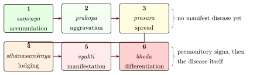

Chapter 10: Diagnosis and Prognosis¶
rogam ādau parīkṣeta tato ’nantaram auṣadham
tataḥ karma bhiṣak paścāj jñānapūrvaṃ samācaret
The physician should first examine the disease, then the remedy;
and only then, with knowledge, undertake treatment.
— Caraka Saṃhitā, Sūtrasthāna 20.20
10.1 The Means of Examination¶
The compendia insist that treatment must follow examination, and that the physician must examine both the disease and the patient. Each describes the means by which the physician gains knowledge in a slightly different way. Caraka applies his general theory of knowledge to medicine: a disease is known by authoritative instruction, by perception and by inference (Ca.Vi. 4). Perception uses all the senses, and inference reasons from signs to what cannot be perceived, such as the state of the digestive fire from the capacity to digest food. Suśruta names six means, the five senses and questioning (Su.Sū. 10), and Vāgbhaṭa reduces them to three: the patient is to be examined by sight, touch and questioning (darśana, sparśana, praśna) (AH Sū. 1.22).
10.2 Examination of the Patient¶
Caraka gives a tenfold scheme for the examination of the patient (Ca.Vi. 8.94; Table 10.1). Its purpose is to judge the patient’s strength, so that the strength of the treatment can be matched to it.
| Factor | What is assessed | |
|---|---|---|
| 1 | prakṛti | the patient’s natural constitution |
| 2 | vikṛti | the disorder and its strength |
| 3 | sāra | the “essence”: which bodily constituent is of the highest quality |
| 4 | saṃhanana | compactness of the body |
| 5 | pramāṇa | bodily measurements and proportions |
| 6 | sātmya | habituation: what the patient is accustomed to |
| 7 | sattva | strength of mind |
| 8 | āhāraśakti | capacity to take and digest food |
| 9 | vyāyāmaśakti | capacity for exercise |
| 10 | vayas | age |
Caraka adds that the physician must examine not only the patient but everything relevant to treatment: the cause (kāraṇa), the instrument (the physician himself), the drugs, the place and the time, the effort required and the expected result (Ca.Vi. 8). Drugs are to be examined for their origin, quality and suitability; places for their nature as dry, marshy or moderate land and for the diseases and habits of their inhabitants; and time both as season and as the stage of the patient’s illness. The examination of the patient is thus embedded in a much wider assessment of the circumstances of treatment.
10.2.1 Measurement and Proportion¶
Caraka’s examination of “measure” (pramāṇa) assumes that each person’s body can be measured in units of his own finger-breadth (aṅgula). He gives the normal dimensions of many parts of the body in these units—the feet, shanks, knees, thighs, chest, neck, face and so on—and states that the height of a well-proportioned person is eighty-four finger-breadths, equal to the span of his outstretched arms (Ca.Vi. 8.117). A person whose proportions match these norms is said to enjoy long life, strength and prosperity. The idea of a body measured by its own units has parallels in Indian iconometry, the rules for the proportions of images, and in other ancient traditions.
10.2.2 The Use of All the Senses¶
The compendia expect the physician to use every sense. Hearing detects the sounds of the joints, intestines and breathing and the quality of the voice; touch, the temperature and texture of the skin and the pulsation of the vessels; sight, colour, shape, growth and the appearance of excreta; smell, the odour of the body, breath, wounds and excreta; and taste—inferred, the texts say, from such signs as the attraction of ants or flies to the patient’s urine or body, since tasting directly is improper. Questioning supplies what the senses cannot: the patient’s history, sensations, habits and desires.
10.3 Examination of the Disease¶
The disease itself is known through its cause, its premonitory signs, its manifest signs, the response to trial treatment and its course of development (nidānapañcaka, Chapter 3).
10.3.1 The Therapeutic Test (Upaśaya)¶
The commentators classify the “therapeutic test” carefully. A measure may give relief because it is opposed to the cause of the disease, opposed to the disease itself, or opposed to both; and in each case the measure may be a drug, a food or a mode of conduct. To these Cakrapāṇidatta adds measures that act by producing an apparently similar effect—as when vomiting is treated by an emetic—giving eighteen kinds of upaśaya in all. A response to such a trial helps to identify the doṣa at work when the signs are ambiguous; failure to respond (anupaśaya) is equally informative.
10.3.2 The Stages of Disease (Kriyākāla)¶
The surgical school describes the development of a disease in six stages, each of which is a “time for action” (kriyākāla) (Su.Sū. 21; Table 10.2 and Figure 10.1). The scheme is often attributed to Caraka in modern books, but it is Suśruta’s.
| Stage | Description | |
|---|---|---|
| 1 | saṃcaya | accumulation of the doṣa in its own seat |
| 2 | prakopa | aggravation of the accumulated doṣa |
| 3 | prasara | spread of the doṣa through the body |
| 4 | sthānasaṃśraya | lodging of the doṣa in a particular place; premonitory signs appear |
| 5 | vyakti | manifestation of the disease |
| 6 | bheda | differentiation of the disease into its varieties; chronicity or complications |

The point of the scheme is therapeutic: the earlier the stage at which the physician intervenes, the easier the treatment. Later writers explain why a spreading doṣa lodges in one place rather than another by a weakness of that place (khavaiguṇya), caused by heredity, previous disease, injury or habit.
10.3.3 Signs, Tests and Differential Diagnosis¶
Caraka is aware that the same sign may belong to several diseases, and that one disease may produce another. In the first chapter of the Nidānasthāna he explains how the five means of knowing a disease work together, and how the physician should distinguish between diseases with similar signs. Where the signs remain ambiguous, the therapeutic test described above helps to decide. The detailed descriptions of the healthy constitution, of the normal measures of the body and of the excellence of its constituents (Chapter 2) serve the same purpose: only by knowing the normal can the physician recognise the abnormal.
Questioning (praśna) covers the patient’s country, season, habits, diet, previous illnesses, the onset and course of the present complaint, and the patient’s own sensations. The compendia insist that the physician should listen carefully and examine thoroughly before forming a judgement, and that he should not be misled by the appearance of a patient (Chapter 3).
10.3.4 Examining a Wound¶
The surgical school developed its own methods of examination. Suśruta teaches the surgeon to examine a wound by its site, shape, size, colour, discharge, smell and pain, and to recognise from these the doṣas involved and whether the wound is clean, infected or healing. He describes the discharges of wounds at length—watery, bloody, purulent, oily and so on—and the smells associated with each doṣa, and lists signs that a wound will not heal: a foul cadaverous smell, extreme pain, a wound over a vital point, and others. Many of these observations correspond to what a modern surgeon would look for in an infected or non-healing wound.
10.3.5 Signs in Pregnancy¶
The texts describe the signs of conception and pregnancy and claim to predict the sex of the child from the mother’s symptoms and preferences: a heaviness or enlargement on the right side, for example, was taken to indicate a son. Such predictions have no reliable basis and, given the history of sex-selection in India, should be regarded purely as part of the history of belief.
10.4 Prognosis¶
Before treating, the physician must decide whether a disease is curable. Caraka divides diseases into the easily curable (sukhasādhya), the curable with difficulty (kṛcchrasādhya), the “maintainable” (yāpya)—which can be held in check but not cured—and the incurable (anupakramya or asādhya) (Ca.Sū. 10). The Indriyasthāna (Chapter 3) is devoted to the signs of approaching death.
The factors that make a disease easy or hard to cure are listed in detail. A disease is easily curable when its causes, premonitory signs and signs are few, when it is not of the same nature as the patient’s constitution, the season or the patient’s age, when it affects one channel and one doṣa, when it is recent, and when the patient is young, strong, self-controlled and supplied with the four “feet” of treatment; the more of these conditions are reversed, the harder the cure (Ca.Sū. 10). The physician is warned that a disease which is curable may become incurable if neglected, and that a “maintainable” disease, kept in check by treatment, will return if treatment is stopped.
The compendia advise the physician not to undertake the treatment of incurable diseases. The reason given is partly the patient’s welfare, but largely the physician’s: failure would damage his reputation and expose him to blame. This is very different from modern medical ethics, which recognises a duty of care to the dying, including relief of pain and honest communication. The classical texts should be read in the light of the conditions of their time, when a physician’s livelihood depended on his reputation and treatment was a private contract; Dagmar Wujastyk discusses the rule and the commentators’ arguments about it (Wujastyk 2012).
10.5 The Eightfold Examination¶
In modern Āyurvedic practice the best-known scheme of examination is the “eightfold examination” (aṣṭavidhaparīkṣā): of the pulse (nāḍī), urine (mūtra), stool (mala), tongue (jihvā), voice (śabda), touch (sparśa), eyes (dṛk) and general appearance (ākṛti). It is not found in the classical compendia. It is given in this form in the Yogaratnākara, a compendium from Maharashtra of about the seventeenth or eighteenth century, and became standard through it.
10.5.1 The Pulse (Nāḍīparīkṣā)¶
Pulse diagnosis, now regarded by many as the hallmark of the Āyurvedic physician, is absent from the works of Caraka, Suśruta and Vāgbhaṭa. It appears first in Sanskrit medical literature in works of the thirteenth and fourteenth centuries—in the Śārṅgadhara Saṃhitā and in short treatises on the pulse attributed to Kaṇāda and others—and was elaborated in later works such as the Bhāvaprakāśa and the Yogaratnākara. Its late appearance has led historians to ask whether it was influenced by the pulse lore of Greco-Arabic (Unani) medicine, which was well established in India by then, or by the Tibetan and Chinese traditions, in which pulse diagnosis is highly developed. The question is not settled (Meulenbeld 1999–2002).
The texts describe feeling the radial pulse at the root of the thumb, usually on the right hand of a man and the left of a woman, with three fingers. The pulse under the index finger is associated with vāta, under the middle finger with pitta and under the ring finger with kapha, and the movement of the pulse is compared to the gaits of animals: a vāta pulse moves like a snake or a leech, a pitta pulse like a frog, crow or quail, a kapha pulse like a swan or peacock. The texts also describe pulses that signify approaching death.
Some modern books and practitioners attach to the Āyurvedic pulse a scheme in which particular finger positions and depths reveal the state of particular organs (lung, liver, kidney and so on). That scheme belongs to Chinese medicine, not to the Sanskrit sources.
10.5.2 Urine and the Oil-drop Test¶
The later texts give urine an importance it lacks in the compendia. The Yogaratnākara describes the examination of a morning sample, and a test in which a drop of oil is placed on the urine and the way it spreads is observed: spreading like a snake indicates vāta, like an umbrella pitta, like a pearl kapha; rapid spreading is a favourable sign and sinking unfavourable. A similar test is used in Siddha medicine (Chapter 11). Uroscopy was also a central diagnostic method of Greco-Arabic and medieval European medicine.
10.5.3 Pulse and Urine in Comparative Perspective¶
Pulse and urine were central to diagnosis in several medical traditions. Galen wrote a series of treatises on the pulse, distinguishing its size, speed, frequency and hardness; Arabic physicians developed this lore further, and it reached India with Unani medicine (Chapter 11). Chinese medicine developed an elaborate pulse diagnosis at three positions on each wrist, codified in the Classic of the Pulse (Maijing) of the third century CE, and Tibetan medicine adopted a related system. Inspection of urine (uroscopy) was the emblem of the physician in medieval Europe and the Islamic world. All these systems drew genuine information from the pulse and the urine—their rate, rhythm, colour and turbidity—but they also read into them far more than they could reliably show.
10.5.4 Tongue, Voice, Skin, Eyes and Form¶
The remaining items of the eightfold examination record signs that any attentive physician would observe: a coated tongue, a hoarse or weak voice, dry or moist skin, the colour of the eyes and the build of the body. The texts relate each to the doṣas.
None of these methods—pulse reading, urine inspection or the oil-drop test—has been shown to diagnose disease reliably. The few studies that have asked whether different practitioners examining the same patient reach the same conclusion have found agreement that varies widely and is often modest (Kurande et al. 2013), and nothing in them supports the claims made in popular books that the pulse can reveal pregnancy, cancer, diabetes or the state of particular organs.
10.6 Reasoning in Diagnosis¶
Caraka gives a special place among the means of knowledge to “reasoning” (yukti), the faculty that sees how many factors combine to produce a result. His example is agricultural: a crop results from the combination of water, ploughing, seed and season; in the same way, an embryo results from the combination of the six factors, and recovery from the combination of physician, drugs, attendant and patient (Ca.Sū. 11.23–25). Diagnosis, on this view, is not the recognition of a single sign but the weighing of many—constitution, season, age, strength, cause, signs and the response to treatment—to reach a judgement about what is happening and what will help. The commentators debated whether yukti is a separate means of knowledge or a form of inference, but the compendia’s emphasis on it captures something essential about clinical judgement in any tradition.
The texts are equally aware of the limits of judgement. They warn that a physician who does not know the disease, even if he knows the drugs, will fail; that a physician who acts in haste, without examining the patient, kills him; and that one who knows the disease and the patient but not the proper time and measure of treatment is no better. These warnings frame the long lists of signs and tests described in this chapter.
10.6.1 Experience and the Missing Case History¶
Among the four qualities of the good physician Caraka names wide practical experience, the physician’s having “often seen the work done” (Ca.Sū. 9.6). Yet the Sanskrit medical literature records almost none of that experience in the form of individual cases. The compendia describe diseases and treatments in general terms; they do not tell the story of a particular patient, with the course of the illness day by day and the outcome. The contrast with other traditions is striking. The Hippocratic Epidemics preserve dozens of case histories, many ending in death. Abū Bakr al-Rāzī kept notes of his own patients, which his pupils gathered after his death (Pormann and Savage-Smith 2007), and Chinese physicians from the Song period onwards published collections of case records.
The nearest Indian equivalents lie outside the learned compendia. The Buddhist monastic code tells the stories of Jīvaka’s cures (Chapter 1), but as narratives that exalt a physician and teach a rule, not as clinical records. Later practitioners kept private lists of “tested” formulae (anubhūta yoga), and Persian-writing ḥakīms compiled collections of remedies they had tried; some of these record which patient a remedy was given to. Case reports in the modern sense appear in Āyurvedic journals only in the twentieth century, under the influence of Western medicine.
Why this should be so is not certain. The authority of the compendia rested on their claim to transmit a teaching handed down from the sages, and an individual physician’s cases would have added little to that claim. The prognosis of the texts, with its general rules for judging curability, also took the place that a record of outcomes might have filled. Whatever the reason, the absence of case histories means that historians know much more about what the texts prescribed than about what physicians actually did, and how often their treatments succeeded. Modern Āyurvedic research faces the same gap in another form: claims of efficacy based on a practitioner’s experience are hard to assess without systematic records of what happened to all the patients treated, not only to those who recovered.
10.7 Diagnosis in Modern Āyurvedic Practice¶
Āyurvedic physicians trained in modern colleges learn both the classical methods and the elements of modern clinical examination, and many routinely order blood tests, urine analysis and imaging. In practice, a modern Āyurvedic diagnosis often combines a biomedical diagnosis—diabetes, osteoarthritis, psoriasis—with an assessment of the patient’s constitution and the doṣas involved, which guides the choice of diet and remedies. Electronic devices that claim to read the doṣas from the pulse have been marketed; there is no good evidence that they measure anything meaningful about the patient’s health. At the other end of the spectrum, some hereditary physicians rely almost entirely on the pulse and on questioning.
The juxtaposition of the two systems in a single consultation raises practical questions. When the Āyurvedic and biomedical assessments point in different directions—for example, when a patient with diabetes is told by one system that his condition is under control and by the other that it is not—the patient needs to know which to trust. For conditions where effective modern treatment exists, the biomedical assessment must take priority.
10.8 Assessment¶
The diagnostic teaching of the compendia has real strengths: it insists that examination comes before treatment; it considers the patient’s constitution, age, habits, strength and mind as well as the disease; and it attends carefully to the history and course of an illness. These are the virtues of good clinical practice in any tradition. Its weakness is that its categories—the doṣas and their combinations—and its signs were never tested against independent evidence of what was wrong with the patient. Modern medicine has the means to do this, and has shown that many diseases cannot be detected without laboratory tests and imaging. Diagnosis is therefore the area in which the traditional and modern systems are least interchangeable.
Summary
The compendia require the physician to examine both patient and disease before he treats, to weigh constitution, strength, age and habit as well as signs, and to judge in advance whether a disease can be cured. The methods most associated with Āyurvedic diagnosis today, the pulse and the eightfold examination, are later additions of the thirteenth to eighteenth centuries and have not been shown to be reliable. The Sanskrit tradition’s lack of case histories means that we know far more about what physicians were told to do than about what they did.
Further Reading¶
Caraka’s Vimāna- and Indriyasthāna are the main classical sources (in the translations of Sharma and Wujastyk (Sharma 1981–1994; Wujastyk 2003)); Meulenbeld discusses the later works on pulse and urine (Meulenbeld 1999–2002).